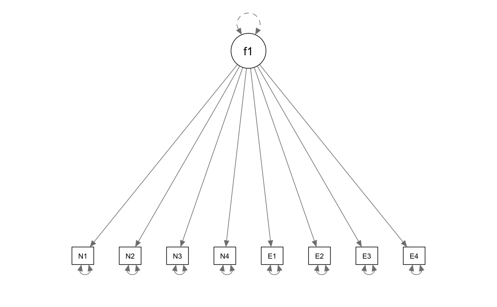
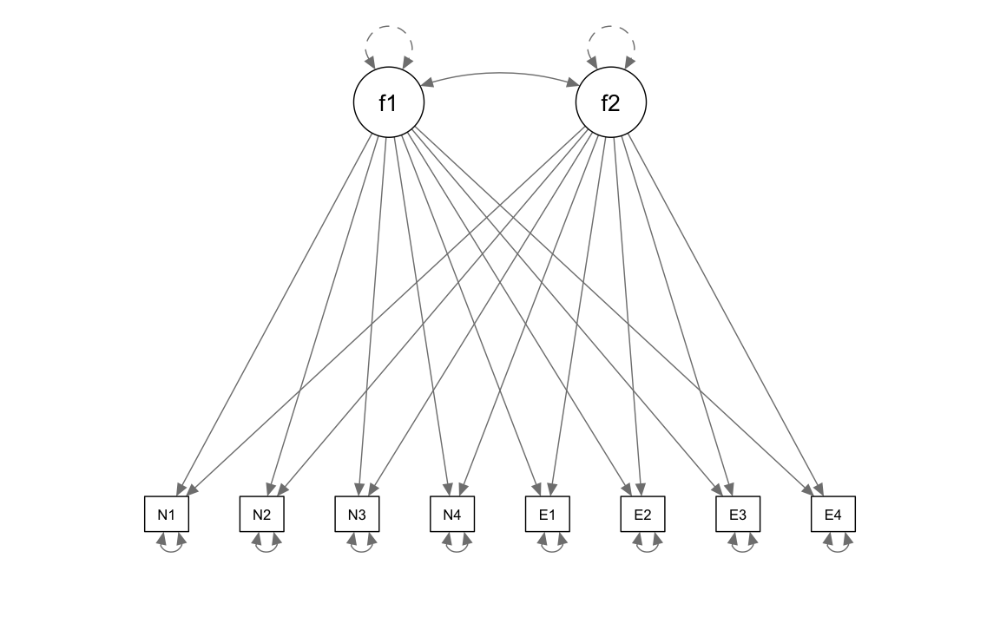
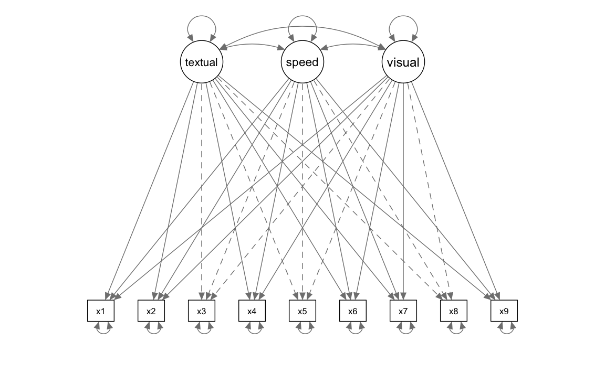

here::here("code", "_common.R") |>
source()
# Load packages
if (!requireNamespace("pacman")) install.packages("pacman")
pacman::p_load(
lavaan, psych, BifactorIndicesCalculator, semPlot, semTools,
esemComp, kableExtra
)44 Exploratory Structural Equation Modeling
Prerequisiti
Concetti e Competenze Chiave
Preparazione del Notebook
44.1 Introduzione
L’Exploratory Structural Equation Modeling (ESEM) rappresenta un framework analitico innovativo che combina i vantaggi dell’Analisi Fattoriale Esplorativa (EFA) con il rigore della Confirmatory Factor Analysis (CFA). Questo approccio integrato consente di mantenere la flessibilità tipica dell’EFA, che permette di considerare le saturazioni incrociate tra i fattori, pur preservando la specificità e il controllo strutturale offerti dalla CFA. In particolare, l’ESEM si distingue per la sua capacità di bilanciare rigore metodologico e adattabilità, rendendolo adatto sia a contesti esplorativi che confermativi.
Un aspetto chiave dell’ESEM è l’introduzione della rotazione target, una tecnica che facilita la definizione a priori dei carichi fattoriali principali, pur consentendo ai carichi incrociati di rimanere il più possibile vicini a zero, ma senza imporre vincoli rigidi. Questa caratteristica permette di applicare il modello in modo confermativo, basandosi su una struttura fattoriale predefinita, ma con una flessibilità tipicamente associata all’EFA. Di conseguenza, l’ESEM si presta efficacemente a contesti in cui è necessario convalidare ipotesi preesistenti, pur lasciando spazio all’esplorazione di relazioni inattese tra variabili.
Nella tradizionale Confirmatory Factor Analysis (CFA), ampiamente utilizzata in ambito psicologico, la struttura fattoriale è definita a priori: si assume che ogni indicatore carichi esclusivamente sul proprio fattore latente di riferimento, con saturazioni incrociate fissate a zero. Questo approccio, sebbene metodologicamente rigoroso, presenta limitazioni significative. In particolare, i modelli CFA tendono a essere eccessivamente restrittivi, presupponendo “fattori puri” in cui ogni item contribuisce solo al proprio costrutto latente. Tuttavia, nella pratica psicologica, molti item riflettono più di un costrutto, rendendo questa assunzione spesso irrealistica. Ignorare le saturazioni incrociate può portare a una rappresentazione distorta delle relazioni tra item e fattori, con conseguenti sovrastime delle statistiche di adattamento del modello e distorsioni positive nelle correlazioni tra fattori. Studi di simulazione hanno dimostrato che anche piccole saturazioni incrociate, se non considerate, possono alterare significativamente le stime dei parametri.
Un ulteriore problema della CFA riguarda gli indici di bontà di adattamento, che risultano spesso troppo rigidi per strumenti psicologici multifattoriali. Questa rigidità rende difficile ottenere un adattamento soddisfacente senza apportare modifiche sostanziali ai modelli. Tuttavia, è importante notare che modelli con indici di adattamento non ottimali possono comunque presentare saturazioni ragionevoli e alti livelli di affidabilità quando analizzati a livello di item.
Proprio per superare queste limitazioni, l’ESEM si è affermato come un approccio più flessibile e robusto, in grado di cogliere la complessità delle misure psicologiche senza sacrificare il rigore metodologico. Grazie alla sua capacità di integrare i punti di forza dell’EFA e della CFA, l’ESEM offre un quadro analitico più realistico e adattabile, rendendolo uno strumento prezioso per la ricerca in ambito psicologico.
44.2 Exploratory Structural Equation Modeling
L’ESEM combina elementi delle CFA e dell’Exploratory Factor Analysis (EFA) all’interno del tradizionale framework delle Equazioni Strutturali (SEM). Questo approccio rappresenta un compromesso tra la ricerca iterativa di soluzioni fattoriali ottimali, tipica dell’EFA, e la modellazione teorica restrittiva delle CFA.
L’ESEM è essenzialmente un metodo confermativo che permette anche un’esplorazione attraverso l’uso di rotazioni mirate, mantenendo la presenza di caricamenti incrociati, seppur minimizzati. All’interno dell’ESEM, il ricercatore può prevedere a priori una struttura fattoriale, similmente a quanto avviene nelle CFA, ma con una maggiore flessibilità permessa dalla possibilità di modellare saturazioni incrociate.
Nell’ESEM, i fattori generali e specifici devono essere specificati come totalmente indipendenti, e le rotazioni ortogonali sono comuni nei modelli bifattoriali. I metodi di rotazione più usati nell’ESEM includono le rotazioni geomin e target, con rotazioni ortogonali adatte ai modelli più complessi.
Le analisi di simulazione indicano che le correlazioni tra i fattori latenti ottenute con l’ESEM sono generalmente meno distorte e più vicine alle vere associazioni, rendendo i modelli ESEM più coerenti con le teorie sottostanti e le intenzioni degli strumenti psicometrici misurati.
Quando un modello ESEM include solo una parte di misurazione, viene definito come “analisi fattoriale esplorativa” o EFA. Se il modello include anche una parte strutturale, come regressioni tra variabili latenti, è classificato come “modello di equazioni strutturali esplorativo” o ESEM.
44.3 Un Esempio Pratico
In questo esempio pratico analizzeremo nuovamente i dati di Brown (2015), ovvero otto misure di personalità raccolte su un campione di 250 pazienti che hanno concluso un programma di psicoterapia. Utilizzeremo un’analisi EFA mediante la funzione efa() di lavaan.
Gli item sono i seguenti:
- anxiety (N1),
- hostility (N2),
- depression (N3),
- self-consciousness (N4),
- warmth (E1),
- gregariousness (E2),
- assertiveness (E3),
- positive emotions (E4).
varnames <- c("N1", "N2", "N3", "N4", "E1", "E2", "E3", "E4")
sds <- "5.7 5.6 6.4 5.7 6.0 6.2 5.7 5.6"
cors <- "
1.000
0.767 1.000
0.731 0.709 1.000
0.778 0.738 0.762 1.000
-0.351 -0.302 -0.356 -0.318 1.000
-0.316 -0.280 -0.300 -0.267 0.675 1.000
-0.296 -0.289 -0.297 -0.296 0.634 0.651 1.000
-0.282 -0.254 -0.292 -0.245 0.534 0.593 0.566 1.000"
psychot_cor_mat <- getCov(cors, names = varnames)
n <- 250Definiamo un modello ad un solo fattore comune.
# 1-factor model
f1 <- '
efa("efa")*f1 =~ N1 + N2 + N3 + N4 + E1 + E2 + E3 + E4
'Definiamo un modello con due fattori comuni.
# 2-factor model
f2 <- '
efa("efa")*f1 +
efa("efa")*f2 =~ N1 + N2 + N3 + N4 + E1 + E2 + E3 + E4
'Adattiamo ai dati il modello ad un fattore comune.
efa_f1 <-cfa(
model = f1,
sample.cov = psychot_cor_mat,
sample.nobs = 250,
rotation = "oblimin"
)semPlot::semPaths(
efa_f1,
what = "col", whatLabels = "no", style = "mx",
layout = "tree", nCharNodes = 7,
shapeMan = "rectangle", sizeMan = 5, sizeMan2 = 4
)
Esaminiamo la soluzione ottenuta.
summary(
efa_f1,
fit.measures = TRUE,
standardized = TRUE,
rsquare = TRUE
) |>
print()
#> lavaan 0.6-19 ended normally after 2 iterations
#>
#> Estimator ML
#> Optimization method NLMINB
#> Number of model parameters 16
#>
#> Rotation method OBLIMIN OBLIQUE
#> Oblimin gamma 0
#> Rotation algorithm (rstarts) GPA (30)
#> Standardized metric TRUE
#> Row weights None
#>
#> Number of observations 250
#>
#> Model Test User Model:
#>
#> Test statistic 375.327
#> Degrees of freedom 20
#> P-value (Chi-square) 0.000
#>
#> Model Test Baseline Model:
#>
#> Test statistic 1253.791
#> Degrees of freedom 28
#> P-value 0.000
#>
#> User Model versus Baseline Model:
#>
#> Comparative Fit Index (CFI) 0.710
#> Tucker-Lewis Index (TLI) 0.594
#>
#> Loglikelihood and Information Criteria:
#>
#> Loglikelihood user model (H0) -2394.637
#> Loglikelihood unrestricted model (H1) -2206.974
#>
#> Akaike (AIC) 4821.275
#> Bayesian (BIC) 4877.618
#> Sample-size adjusted Bayesian (SABIC) 4826.897
#>
#> Root Mean Square Error of Approximation:
#>
#> RMSEA 0.267
#> 90 Percent confidence interval - lower 0.243
#> 90 Percent confidence interval - upper 0.291
#> P-value H_0: RMSEA <= 0.050 0.000
#> P-value H_0: RMSEA >= 0.080 1.000
#>
#> Standardized Root Mean Square Residual:
#>
#> SRMR 0.187
#>
#> Parameter Estimates:
#>
#> Standard errors Standard
#> Information Expected
#> Information saturated (h1) model Structured
#>
#> Latent Variables:
#> Estimate Std.Err z-value P(>|z|) Std.lv Std.all
#> f1 =~ efa
#> N1 0.879 0.051 17.333 0.000 0.879 0.880
#> N2 0.841 0.052 16.154 0.000 0.841 0.842
#> N3 0.841 0.052 16.175 0.000 0.841 0.843
#> N4 0.870 0.051 17.065 0.000 0.870 0.872
#> E1 -0.438 0.062 -7.041 0.000 -0.438 -0.439
#> E2 -0.398 0.063 -6.327 0.000 -0.398 -0.398
#> E3 -0.398 0.063 -6.342 0.000 -0.398 -0.399
#> E4 -0.364 0.063 -5.746 0.000 -0.364 -0.364
#>
#> Variances:
#> Estimate Std.Err z-value P(>|z|) Std.lv Std.all
#> .N1 0.224 0.028 7.915 0.000 0.224 0.225
#> .N2 0.289 0.033 8.880 0.000 0.289 0.290
#> .N3 0.288 0.032 8.866 0.000 0.288 0.289
#> .N4 0.239 0.029 8.174 0.000 0.239 0.240
#> .E1 0.804 0.073 10.963 0.000 0.804 0.807
#> .E2 0.838 0.076 11.008 0.000 0.838 0.841
#> .E3 0.837 0.076 11.007 0.000 0.837 0.841
#> .E4 0.864 0.078 11.041 0.000 0.864 0.867
#> f1 1.000 1.000 1.000
#>
#> R-Square:
#> Estimate
#> N1 0.775
#> N2 0.710
#> N3 0.711
#> N4 0.760
#> E1 0.193
#> E2 0.159
#> E3 0.159
#> E4 0.133standardizedSolution(efa_f1) |> print()
#> lhs op rhs est.std se z pvalue ci.lower ci.upper
#> 1 f1 =~ N1 0.880 0.018 48.29 0 0.845 0.916
#> 2 f1 =~ N2 0.842 0.022 38.61 0 0.800 0.885
#> 3 f1 =~ N3 0.843 0.022 38.76 0 0.800 0.886
#> 4 f1 =~ N4 0.872 0.019 45.88 0 0.835 0.909
#> 5 f1 =~ E1 -0.439 0.054 -8.18 0 -0.544 -0.334
#> 6 f1 =~ E2 -0.398 0.056 -7.14 0 -0.508 -0.289
#> 7 f1 =~ E3 -0.399 0.056 -7.16 0 -0.508 -0.290
#> 8 f1 =~ E4 -0.364 0.057 -6.35 0 -0.477 -0.252
#> 9 N1 ~~ N1 0.225 0.032 7.01 0 0.162 0.288
#> 10 N2 ~~ N2 0.290 0.037 7.90 0 0.218 0.362
#> 11 N3 ~~ N3 0.289 0.037 7.88 0 0.217 0.361
#> 12 N4 ~~ N4 0.240 0.033 7.23 0 0.175 0.305
#> 13 E1 ~~ E1 0.807 0.047 17.14 0 0.715 0.900
#> 14 E2 ~~ E2 0.841 0.044 18.93 0 0.754 0.928
#> 15 E3 ~~ E3 0.841 0.045 18.89 0 0.753 0.928
#> 16 E4 ~~ E4 0.867 0.042 20.72 0 0.785 0.949
#> 17 f1 ~~ f1 1.000 0.000 NA NA 1.000 1.000lavaan::residuals(efa_f1, type = "cor") |> print()
#> $type
#> [1] "cor.bollen"
#>
#> $cov
#> N1 N2 N3 N4 E1 E2 E3 E4
#> N1 0.000
#> N2 0.025 0.000
#> N3 -0.011 -0.001 0.000
#> N4 0.010 0.003 0.027 0.000
#> E1 0.035 0.068 0.014 0.065 0.000
#> E2 0.035 0.056 0.036 0.080 0.500 0.000
#> E3 0.055 0.047 0.040 0.052 0.459 0.492 0.000
#> E4 0.039 0.053 0.015 0.073 0.374 0.448 0.421 0.000Adattiamo ai dati il modello a due fattori comuni.
efa_f2 <- cfa(
model = f2,
sample.cov = psychot_cor_mat,
sample.nobs = 250,
rotation = "oblimin"
)semPlot::semPaths(
efa_f2,
what = "col", whatLabels = "no", style = "mx",
layout = "tree", nCharNodes = 7,
shapeMan = "rectangle", sizeMan = 5, sizeMan2 = 4
)
Esaminiamo la soluzione ottenuta.
summary(
efa_f2,
fit.measures = TRUE,
standardized = TRUE,
rsquare = TRUE
) |> print()
#> lavaan 0.6-19 ended normally after 1 iteration
#>
#> Estimator ML
#> Optimization method NLMINB
#> Number of model parameters 25
#> Row rank of the constraints matrix 2
#>
#> Rotation method OBLIMIN OBLIQUE
#> Oblimin gamma 0
#> Rotation algorithm (rstarts) GPA (30)
#> Standardized metric TRUE
#> Row weights None
#>
#> Number of observations 250
#>
#> Model Test User Model:
#>
#> Test statistic 9.811
#> Degrees of freedom 13
#> P-value (Chi-square) 0.709
#>
#> Model Test Baseline Model:
#>
#> Test statistic 1253.791
#> Degrees of freedom 28
#> P-value 0.000
#>
#> User Model versus Baseline Model:
#>
#> Comparative Fit Index (CFI) 1.000
#> Tucker-Lewis Index (TLI) 1.006
#>
#> Loglikelihood and Information Criteria:
#>
#> Loglikelihood user model (H0) -2211.879
#> Loglikelihood unrestricted model (H1) -2206.974
#>
#> Akaike (AIC) 4469.758
#> Bayesian (BIC) 4550.752
#> Sample-size adjusted Bayesian (SABIC) 4477.840
#>
#> Root Mean Square Error of Approximation:
#>
#> RMSEA 0.000
#> 90 Percent confidence interval - lower 0.000
#> 90 Percent confidence interval - upper 0.048
#> P-value H_0: RMSEA <= 0.050 0.957
#> P-value H_0: RMSEA >= 0.080 0.001
#>
#> Standardized Root Mean Square Residual:
#>
#> SRMR 0.010
#>
#> Parameter Estimates:
#>
#> Standard errors Standard
#> Information Expected
#> Information saturated (h1) model Structured
#>
#> Latent Variables:
#> Estimate Std.Err z-value P(>|z|) Std.lv Std.all
#> f1 =~ efa
#> N1 0.874 0.053 16.592 0.000 0.874 0.876
#> N2 0.851 0.055 15.551 0.000 0.851 0.853
#> N3 0.826 0.054 15.179 0.000 0.826 0.828
#> N4 0.896 0.053 16.802 0.000 0.896 0.898
#> E1 -0.046 0.040 -1.138 0.255 -0.046 -0.046
#> E2 0.035 0.034 1.030 0.303 0.035 0.035
#> E3 0.000 0.040 0.010 0.992 0.000 0.000
#> E4 -0.006 0.049 -0.131 0.896 -0.006 -0.006
#> f2 =~ efa
#> N1 -0.017 0.032 -0.539 0.590 -0.017 -0.017
#> N2 0.011 0.035 0.322 0.748 0.011 0.011
#> N3 -0.035 0.036 -0.949 0.343 -0.035 -0.035
#> N4 0.031 0.031 0.994 0.320 0.031 0.031
#> E1 0.776 0.059 13.125 0.000 0.776 0.778
#> E2 0.854 0.058 14.677 0.000 0.854 0.855
#> E3 0.785 0.060 13.106 0.000 0.785 0.787
#> E4 0.695 0.063 10.955 0.000 0.695 0.697
#>
#> Covariances:
#> Estimate Std.Err z-value P(>|z|) Std.lv Std.all
#> f1 ~~
#> f2 -0.432 0.059 -7.345 0.000 -0.432 -0.432
#>
#> Variances:
#> Estimate Std.Err z-value P(>|z|) Std.lv Std.all
#> .N1 0.218 0.028 7.790 0.000 0.218 0.219
#> .N2 0.279 0.032 8.693 0.000 0.279 0.280
#> .N3 0.287 0.032 8.907 0.000 0.287 0.289
#> .N4 0.216 0.029 7.578 0.000 0.216 0.217
#> .E1 0.361 0.044 8.226 0.000 0.361 0.362
#> .E2 0.292 0.043 6.787 0.000 0.292 0.293
#> .E3 0.379 0.046 8.315 0.000 0.379 0.381
#> .E4 0.509 0.053 9.554 0.000 0.509 0.511
#> f1 1.000 1.000 1.000
#> f2 1.000 1.000 1.000
#>
#> R-Square:
#> Estimate
#> N1 0.781
#> N2 0.720
#> N3 0.711
#> N4 0.783
#> E1 0.638
#> E2 0.707
#> E3 0.619
#> E4 0.489standardizedSolution(efa_f2) |> print()
#> lhs op rhs est.std se z pvalue ci.lower ci.upper
#> 1 f1 =~ N1 0.876 0.024 36.440 0.000 0.829 0.923
#> 2 f1 =~ N2 0.853 0.027 31.403 0.000 0.800 0.906
#> 3 f1 =~ N3 0.828 0.028 29.069 0.000 0.772 0.884
#> 4 f1 =~ N4 0.898 0.023 38.383 0.000 0.852 0.944
#> 5 f1 =~ E1 -0.046 0.040 -1.139 0.255 -0.125 0.033
#> 6 f1 =~ E2 0.035 0.034 1.031 0.303 -0.031 0.101
#> 7 f1 =~ E3 0.000 0.040 0.010 0.992 -0.078 0.079
#> 8 f1 =~ E4 -0.006 0.049 -0.131 0.896 -0.103 0.090
#> 9 f2 =~ N1 -0.017 0.032 -0.539 0.590 -0.079 0.045
#> 10 f2 =~ N2 0.011 0.035 0.322 0.748 -0.058 0.080
#> 11 f2 =~ N3 -0.035 0.037 -0.949 0.343 -0.106 0.037
#> 12 f2 =~ N4 0.031 0.031 0.994 0.320 -0.030 0.092
#> 13 f2 =~ E1 0.778 0.038 20.654 0.000 0.704 0.852
#> 14 f2 =~ E2 0.855 0.033 26.036 0.000 0.791 0.920
#> 15 f2 =~ E3 0.787 0.038 20.886 0.000 0.713 0.861
#> 16 f2 =~ E4 0.697 0.046 15.282 0.000 0.607 0.786
#> 17 N1 ~~ N1 0.219 0.032 6.905 0.000 0.157 0.281
#> 18 N2 ~~ N2 0.280 0.036 7.727 0.000 0.209 0.351
#> 19 N3 ~~ N3 0.289 0.036 7.909 0.000 0.217 0.360
#> 20 N4 ~~ N4 0.217 0.032 6.751 0.000 0.154 0.280
#> 21 E1 ~~ E1 0.362 0.047 7.673 0.000 0.269 0.454
#> 22 E2 ~~ E2 0.293 0.046 6.322 0.000 0.202 0.384
#> 23 E3 ~~ E3 0.381 0.049 7.816 0.000 0.285 0.476
#> 24 E4 ~~ E4 0.511 0.053 9.631 0.000 0.407 0.615
#> 25 f1 ~~ f1 1.000 0.000 NA NA 1.000 1.000
#> 26 f2 ~~ f2 1.000 0.000 NA NA 1.000 1.000
#> 27 f1 ~~ f2 -0.432 0.059 -7.345 0.000 -0.547 -0.317Anche se abbiamo introdotto finora soltanto la misura di bontà di adattamento del chi-quadrato, aggiungiamo qui il calcolo di altre misure di bontà di adattamento che discuteremo in seguito.
fit_measures_robust <- c(
"chisq", "df", "pvalue", "cfi", "rmsea", "srmr"
)Confrontiamo le misure di bontà di adattamento del modello che ipotizza un solo fattore comune e il modello che ipotizza la presenza di due fattori comuni.
# collect them for each model
rbind(
fitmeasures(efa_f1, fit_measures_robust),
fitmeasures(efa_f2, fit_measures_robust)
) |>
# wrangle
data.frame() |>
mutate(
chisq = round(chisq, digits = 0),
df = as.integer(df),
pvalue = ifelse(pvalue == 0, "< .001", pvalue)
) |>
mutate_at(vars(cfi:srmr), ~ round(., digits = 3)) |>
print()
#> chisq df pvalue cfi rmsea srmr
#> 1 375 20 < .001 0.71 0.267 0.187
#> 2 10 13 0.709310449320098 1.00 0.000 0.010lavaan::residuals(efa_f2, type = "cor") |> print()
#> $type
#> [1] "cor.bollen"
#>
#> $cov
#> N1 N2 N3 N4 E1 E2 E3 E4
#> N1 0.000
#> N2 0.018 0.000
#> N3 -0.014 -0.006 0.000
#> N4 -0.003 -0.013 0.017 0.000
#> E1 -0.003 0.015 -0.012 0.000 0.000
#> E2 -0.009 -0.004 0.006 0.007 0.006 0.000
#> E3 0.015 -0.008 0.011 -0.016 0.006 -0.010 0.000
#> E4 -0.001 0.000 -0.013 0.009 -0.024 0.006 0.016 0.000L’evidenza empirica supporta la superiorità del modello a due fattori rispetto a quello ad un solo fattore comune. In particolare, l’analisi fattoriale esplorativa svolta mediante la funzione efa() evidenzia la capacità del modello a due fattori di fornire una descrizione adeguata della struttura dei dati e di distinguere in modo sensato tra i due fattori ipotizzati.
44.4 ESEM-within-CFA
Un approccio alternativo per eseguire un modello ESEM è quello proposto da Marsh et al. (2014), noto come ESEM-within-CFA. Questo metodo prevede di eseguire prima la parte esplorativa (EFA) e poi utilizzare i risultati ottenuti come valori iniziali per un modello CFA. In pratica, si combina la flessibilità dell’EFA con il rigore della CFA, sfruttando i vantaggi di entrambi gli approcci.
Per illustrare questo metodo, seguiremo il tutorial di esemComp e utilizzeremo il dataset di Holzinger e Swineford (1939), disponibile nel pacchetto lavaan di R. Questo dataset contiene i risultati di 301 bambini in test che misurano tre abilità cognitive:
-
Abilità visiva (item x1-x3),
-
Abilità testuale (item x4-x6),
- Abilità di velocità (item x7-x9).
Per iniziare, carichiamo il dataset e selezioniamo solo le colonne relative agli item di interesse. Questo ci permetterà di concentrarci sulle variabili rilevanti per l’analisi ESEM.
#load full data
hw_data <- lavaan::HolzingerSwineford1939
# keep all rows and only the item-columns
hw_data <- hw_data[, c(7:15)]
#take a look
head(hw_data)
#> x1 x2 x3 x4 x5 x6 x7 x8 x9
#> 1 3.33 7.75 0.375 2.33 5.75 1.286 3.39 5.75 6.36
#> 2 5.33 5.25 2.125 1.67 3.00 1.286 3.78 6.25 7.92
#> 3 4.50 5.25 1.875 1.00 1.75 0.429 3.26 3.90 4.42
#> 4 5.33 7.75 3.000 2.67 4.50 2.429 3.00 5.30 4.86
#> 5 4.83 4.75 0.875 2.67 4.00 2.571 3.70 6.30 5.92
#> 6 5.33 5.00 2.250 1.00 3.00 0.857 4.35 6.65 7.5044.4.1 Blocchi EFA (Analisi Fattoriale Esplorativa)
Per eseguire un’Analisi Fattoriale Esplorativa (EFA) con una rotazione target, prima dobbiamo specificare la matrice di rotazione target. La funzione make_target() semplifica questo processo. Per far funzionare questa funzione, dobbiamo indicare la corrispondenza tra i fattori e i loro principali carichi (loadings), ovvero quali elementi ci aspettiamo che abbiano un carico elevato su ciascun fattore.
Questa informazione deve essere contenuta in una lista, dove il nome di ogni elemento è il nome del fattore, e il contenuto è un vettore numerico con il numero di colonna degli elementi che si riferiscono a quel fattore.
Se controlliamo il dataset e i fattori, vediamo che la corrispondenza tra fattore e numero di colonna dell’elemento è piuttosto chiara in questo dataset. Le prime tre colonne si riferiscono agli elementi del primo fattore, le successive tre colonne sono gli elementi del secondo fattore, e così via. Tuttavia, questo potrebbe non essere il caso nel tuo dataset! Molte scale hanno elementi correlati a diversi fattori alternati, il che porta a elementi non sequenziali che si riferiscono allo stesso fattore.
È importante ricordare che il numero dell’elemento per la matrice di rotazione si riferisce sempre alla posizione della colonna dell’elemento all’interno di un dataframe che contiene solo i dati degli elementi (ricorda che all’inizio di questa guida abbiamo creato un dataset separato contenente solo i dati degli elementi). Il numero più basso sarà sempre uno, e il numero più alto sarà il totale degli elementi.
# list with mapping between factors and items
main_loadings_list <- list(visual = c(1:3),
textual = c(4:6),
speed = c(7:9))
target_rot <- make_target(nitems = 9, mainloadings = main_loadings_list)
target_rot
#> visual textual speed
#> [1,] NA 0 0
#> [2,] NA 0 0
#> [3,] NA 0 0
#> [4,] 0 NA 0
#> [5,] 0 NA 0
#> [6,] 0 NA 0
#> [7,] 0 0 NA
#> [8,] 0 0 NA
#> [9,] 0 0 NANella matrice di rotazione target, i valori NA indicano carichi (loadings) che non devono essere avvicinati a zero durante la procedura di rotazione, mentre gli zeri indicano il contrario, ovvero che quei carichi dovrebbero essere avvicinati a zero.
È altresì possibile realizzare facilmente una rotazione target per un modello bifattoriale.
bifactor_target_rot <- make_target(nitems = 9,
mainloadings = main_loadings_list,
bifactor = TRUE)
bifactor_target_rot
#> visual textual speed G
#> [1,] NA 0 0 NA
#> [2,] NA 0 0 NA
#> [3,] NA 0 0 NA
#> [4,] 0 NA 0 NA
#> [5,] 0 NA 0 NA
#> [6,] 0 NA 0 NA
#> [7,] 0 0 NA NA
#> [8,] 0 0 NA NA
#> [9,] 0 0 NA NAOra, per l’estrazione dei carichi (loadings) utilizzando la funzione esem_efa(), dobbiamo fornire i dati, il numero di fattori da estrarre e la matrice di rotazione target.
# Specify the efa block.
# Note that if we continued with the bifactor model 'nfactors' would then be specified as 4 and not 3 due to the G factor being added
efa_block <- esem_efa(data = hw_data,
nfactors = 3,
target = target_rot)
#> Loading required namespace: GPArotation
efa_block
#> Factor Analysis using method = pa
#> Call: psych::fa(r = data, nfactors = nfactors, rotate = targetAlgorithm,
#> fm = fm, Target = target)
#> Standardized loadings (pattern matrix) based upon correlation matrix
#> PA2 PA3 PA1 h2 u2 com
#> x1 0.18 0.08 0.58 0.48 0.52 1.2
#> x2 0.03 -0.09 0.52 0.26 0.74 1.1
#> x3 -0.08 0.08 0.67 0.45 0.55 1.1
#> x4 0.85 0.01 0.02 0.73 0.27 1.0
#> x5 0.89 0.00 -0.06 0.75 0.25 1.0
#> x6 0.80 -0.01 0.08 0.69 0.31 1.0
#> x7 0.04 0.75 -0.24 0.51 0.49 1.2
#> x8 -0.05 0.72 0.03 0.52 0.48 1.0
#> x9 0.01 0.50 0.32 0.46 0.54 1.7
#>
#> PA2 PA3 PA1
#> SS loadings 2.22 1.38 1.26
#> Proportion Var 0.25 0.15 0.14
#> Cumulative Var 0.25 0.40 0.54
#> Proportion Explained 0.46 0.28 0.26
#> Cumulative Proportion 0.46 0.74 1.00
#>
#> With factor correlations of
#> PA2 PA3 PA1
#> PA2 1.00 0.26 0.34
#> PA3 0.26 1.00 0.31
#> PA1 0.34 0.31 1.00
#>
#> Mean item complexity = 1.1
#> Test of the hypothesis that 3 factors are sufficient.
#>
#> df null model = 36 with the objective function = 3.05 with Chi Square = 904
#> df of the model are 12 and the objective function was 0.08
#>
#> The root mean square of the residuals (RMSR) is 0.02
#> The df corrected root mean square of the residuals is 0.03
#>
#> The harmonic n.obs is 301 with the empirical chi square 7.87 with prob < 0.8
#> The total n.obs was 301 with Likelihood Chi Square = 22.5 with prob < 0.032
#>
#> Tucker Lewis Index of factoring reliability = 0.963
#> RMSEA index = 0.054 and the 90 % confidence intervals are 0.016 0.088
#> BIC = -46
#> Fit based upon off diagonal values = 1
#> Measures of factor score adequacy
#> PA2 PA3 PA1
#> Correlation of (regression) scores with factors 0.94 0.86 0.84
#> Multiple R square of scores with factors 0.89 0.74 0.70
#> Minimum correlation of possible factor scores 0.78 0.48 0.40La funzione esem_efa() è in realtà un wrapper intorno alla funzione fa() del pacchetto psych, utilizzata per l’analisi fattoriale esplorativa. Tutti i controlli disponibili in fa() possono essere specificati per una maggiore personalizzazione della procedura di estrazione dei fattori. Assicurati sempre di fornire gli argomenti della funzione originale utilizzando la sintassi nome = valore. Consulta la documentazione di fa() per ulteriori informazioni sui controlli e sui campi presenti nell’oggetto di output.
Per impostazione predefinita, viene utilizzata una rotazione obliqua come rotazione target. L’utente può scegliere di passare a una rotazione ortogonale impostando il parametro targetAlgorithm su TargetT. Un’altra opzione è quella di eliminare completamente l’utilizzo della rotazione target e optare invece per una rotazione Geomin. In questo caso, basta non specificare il parametro target. Un’ultima possibilità è disponibile per i modelli bifattoriali: in questo caso, basta impostare bifactor = TRUE. Attualmente, i modelli bifattoriali sono supportati solo con la rotazione target.
Il codice per ciascuno di questi casi è riportato di seguito (commentato).
# geomin rotation
esem_efa(data = hw_data,
nfactors = 3)
#> Factor Analysis using method = pa
#> Call: psych::fa(r = data, nfactors = nfactors, rotate = "geominQ",
#> fm = fm)
#> Standardized loadings (pattern matrix) based upon correlation matrix
#> PA1 PA3 PA2 h2 u2 com
#> x1 0.19 0.59 0.03 0.48 0.52 1.2
#> x2 0.04 0.51 -0.12 0.26 0.74 1.1
#> x3 -0.07 0.69 0.02 0.45 0.55 1.0
#> x4 0.84 0.02 0.01 0.73 0.27 1.0
#> x5 0.88 -0.06 0.01 0.75 0.25 1.0
#> x6 0.80 0.08 -0.01 0.69 0.31 1.0
#> x7 0.03 -0.14 0.73 0.51 0.49 1.1
#> x8 -0.04 0.14 0.69 0.52 0.48 1.1
#> x9 0.02 0.39 0.45 0.46 0.54 2.0
#>
#> PA1 PA3 PA2
#> SS loadings 2.23 1.36 1.27
#> Proportion Var 0.25 0.15 0.14
#> Cumulative Var 0.25 0.40 0.54
#> Proportion Explained 0.46 0.28 0.26
#> Cumulative Proportion 0.46 0.74 1.00
#>
#> With factor correlations of
#> PA1 PA3 PA2
#> PA1 1.00 0.32 0.22
#> PA3 0.32 1.00 0.25
#> PA2 0.22 0.25 1.00
#>
#> Mean item complexity = 1.2
#> Test of the hypothesis that 3 factors are sufficient.
#>
#> df null model = 36 with the objective function = 3.05 with Chi Square = 904
#> df of the model are 12 and the objective function was 0.08
#>
#> The root mean square of the residuals (RMSR) is 0.02
#> The df corrected root mean square of the residuals is 0.03
#>
#> The harmonic n.obs is 301 with the empirical chi square 7.87 with prob < 0.8
#> The total n.obs was 301 with Likelihood Chi Square = 22.5 with prob < 0.032
#>
#> Tucker Lewis Index of factoring reliability = 0.963
#> RMSEA index = 0.054 and the 90 % confidence intervals are 0.016 0.088
#> BIC = -46
#> Fit based upon off diagonal values = 1
#> Measures of factor score adequacy
#> PA1 PA3 PA2
#> Correlation of (regression) scores with factors 0.94 0.84 0.85
#> Multiple R square of scores with factors 0.89 0.71 0.72
#> Minimum correlation of possible factor scores 0.78 0.42 0.44# orthogonal target rotation
esem_efa(data = hw_data,
nfactors = 3,
target = target_rot,
targetAlgorithm = "TargetT")
#> Factor Analysis using method = pa
#> Call: psych::fa(r = data, nfactors = nfactors, rotate = targetAlgorithm,
#> fm = fm, Target = target)
#> Standardized loadings (pattern matrix) based upon correlation matrix
#> PA2 PA3 PA1 h2 u2 com
#> x1 0.31 0.18 0.59 0.48 0.52 1.7
#> x2 0.12 -0.01 0.49 0.26 0.74 1.1
#> x3 0.07 0.16 0.65 0.45 0.55 1.2
#> x4 0.84 0.09 0.12 0.73 0.27 1.1
#> x5 0.86 0.08 0.05 0.75 0.25 1.0
#> x6 0.81 0.08 0.18 0.69 0.31 1.1
#> x7 0.10 0.70 -0.12 0.51 0.49 1.1
#> x8 0.07 0.71 0.13 0.52 0.48 1.1
#> x9 0.16 0.54 0.38 0.46 0.54 2.0
#>
#> PA2 PA3 PA1
#> SS loadings 2.26 1.36 1.24
#> Proportion Var 0.25 0.15 0.14
#> Cumulative Var 0.25 0.40 0.54
#> Proportion Explained 0.47 0.28 0.25
#> Cumulative Proportion 0.47 0.75 1.00
#>
#> Mean item complexity = 1.3
#> Test of the hypothesis that 3 factors are sufficient.
#>
#> df null model = 36 with the objective function = 3.05 with Chi Square = 904
#> df of the model are 12 and the objective function was 0.08
#>
#> The root mean square of the residuals (RMSR) is 0.02
#> The df corrected root mean square of the residuals is 0.03
#>
#> The harmonic n.obs is 301 with the empirical chi square 7.87 with prob < 0.8
#> The total n.obs was 301 with Likelihood Chi Square = 22.5 with prob < 0.032
#>
#> Tucker Lewis Index of factoring reliability = 0.963
#> RMSEA index = 0.054 and the 90 % confidence intervals are 0.016 0.088
#> BIC = -46
#> Fit based upon off diagonal values = 1
#> Measures of factor score adequacy
#> PA2 PA3 PA1
#> Correlation of (regression) scores with factors 0.94 0.84 0.81
#> Multiple R square of scores with factors 0.88 0.71 0.65
#> Minimum correlation of possible factor scores 0.75 0.42 0.30# bifactor model
esem_efa(data = hw_data,
nfactors = 4,
target = bifactor_target_rot,
SMC=FALSE,
bifactor = TRUE)
#> Factor Analysis using method = pa
#> Call: psych::fa(r = data, nfactors = nfactors, rotate = "TargetT",
#> SMC = FALSE, fm = fm, Target = target)
#> Standardized loadings (pattern matrix) based upon correlation matrix
#> PA4 PA2 PA3 PA1 h2 u2 com
#> x1 0.74 0.08 -0.02 0.00 0.55 0.449 1.0
#> x2 0.41 0.01 -0.06 0.90 0.97 0.029 1.4
#> x3 0.62 -0.12 0.01 0.10 0.41 0.593 1.1
#> x4 0.40 0.75 0.02 -0.03 0.73 0.273 1.5
#> x5 0.32 0.81 0.04 0.01 0.76 0.240 1.3
#> x6 0.42 0.71 0.02 0.02 0.69 0.312 1.6
#> x7 0.12 0.09 0.67 -0.10 0.48 0.519 1.1
#> x8 0.30 0.00 0.67 0.01 0.55 0.453 1.4
#> x9 0.53 0.01 0.42 0.02 0.46 0.543 1.9
#>
#> PA4 PA2 PA3 PA1
#> SS loadings 1.92 1.76 1.09 0.82
#> Proportion Var 0.21 0.20 0.12 0.09
#> Cumulative Var 0.21 0.41 0.53 0.62
#> Proportion Explained 0.34 0.31 0.19 0.15
#> Cumulative Proportion 0.34 0.66 0.85 1.00
#>
#> Mean item complexity = 1.4
#> Test of the hypothesis that 4 factors are sufficient.
#>
#> df null model = 36 with the objective function = 3.05 with Chi Square = 904
#> df of the model are 6 and the objective function was 0.06
#>
#> The root mean square of the residuals (RMSR) is 0.02
#> The df corrected root mean square of the residuals is 0.04
#>
#> The harmonic n.obs is 301 with the empirical chi square 5.13 with prob < 0.53
#> The total n.obs was 301 with Likelihood Chi Square = 18 with prob < 0.0064
#>
#> Tucker Lewis Index of factoring reliability = 0.917
#> RMSEA index = 0.081 and the 90 % confidence intervals are 0.04 0.126
#> BIC = -16.3
#> Fit based upon off diagonal values = 1
#> Measures of factor score adequacy
#> PA4 PA2 PA3 PA1
#> Correlation of (regression) scores with factors 0.85 0.90 0.81 0.95
#> Multiple R square of scores with factors 0.72 0.82 0.66 0.91
#> Minimum correlation of possible factor scores 0.45 0.64 0.32 0.81È certo utile poter eseguire queste analisi fattoriali utilizzando l’approccio ESEM (Exploratory Structural Equation Modeling), ma ciò non offre ancora la grande flessibilità ed estensibilità propria dei modelli CFA/SEM (Confirmatory Factor Analysis / Structural Equation Modeling). Per accedere a queste funzionalità, utilizzeremo successivamente l’approccio ESEM-all’interno-del-CFA.
44.4.2 ESEM-all-interno-del-CFA
Una volta ottenuta un’analisi fattoriale esplorativa (EFA) realizzata con l’approccio ESEM, è sufficiente utilizzare la funzione syntax_composer() per “comporre” il modello ESEM-all-interno-del-CFA utilizzando la sintassi di lavaan. Successivamente, con la sintassi generata, possiamo eseguire il fitting del modello in lavaan.
La funzione syntax_composer() richiede come primo argomento una soluzione EFA e come secondo argomento una lista denominata che indica i referenti (indicatori di riferimento) per ciascun fattore. Ogni voce della lista deve avere il formato fattore = "nome_elemento". È fondamentale che questa lista rispetti lo stesso ordine in cui i fattori appaiono nella matrice dei carichi fattoriali della soluzione EFA. Di solito, questo ordine non corrisponde a quello utilizzato nella lista per creare la rotazione target, poiché nella matrice EFA i fattori sono ordinati in base alla quantità di varianza spiegata, non in base all’ordine fornito dall’utente.
Per esempio, controllando i carichi fattoriali, possiamo dedurre che nell’esempio in questione l’ordine nella matrice dei carichi fattoriali è “testuale, velocità, visivo”. Questo ordine non coincide con quello utilizzato in make_target(), dove abbiamo specificato “visivo, testuale, velocità”.
efa_block$loadings
#>
#> Loadings:
#> PA2 PA3 PA1
#> x1 0.179 0.577
#> x2 0.515
#> x3 0.670
#> x4 0.845
#> x5 0.886
#> x6 0.803
#> x7 0.745 -0.240
#> x8 0.724
#> x9 0.504 0.317
#>
#> PA2 PA3 PA1
#> SS loadings 2.189 1.354 1.218
#> Proportion Var 0.243 0.150 0.135
#> Cumulative Var 0.243 0.394 0.529Quando esaminiamo la matrice dei carichi fattoriali, possiamo anche scegliere qual è il miglior referente (indicatore di riferimento) per ciascun fattore. Dovrebbe sempre essere un elemento che ha un carico elevato su un fattore e basso sugli altri. Quindi, per il fattore “testuale”, il referente sarà x5, per il fattore “velocità” sarà x8 e per il fattore “visivo” sarà x3. Creeremo la lista con questi elementi in quest’ordine.
# create named character vector of referents
hw_referents <- list(textual = "x5",
speed = "x8",
visual = "x3")Alternativamente, è possibile utilizzare la funzione find_referents() per selezionare automaticamente i referenti (indicatori di riferimento). Gli input richiesti sono il risultato della funzione esem_efa() e un vettore di caratteri con i nomi desiderati per i fattori. Ancora una volta, i nomi devono corrispondere all’ordine in cui i fattori appaiono nella soluzione esplorativa.
find_referents(efa_block, c("textual", "speed", "visual"))
#> $textual
#> [1] "x5"
#>
#> $speed
#> [1] "x7"
#>
#> $visual
#> [1] "x3"Si dovrebbe notare che i referenti scelti dalla funzione non sono esattamente gli stessi di quelli selezionati manualmente esaminando i carichi fattoriali; il referente per il fattore “velocità” differisce. Ciò accade perché l’attuale implementazione della funzione find_referents() cerca solo l’elemento con il carico più alto per ciascun fattore, senza considerare quanto bene tale elemento carichi su altri fattori.
Infine, compiliamo la sintassi per lavaan utilizzando la funzione syntax_composer:
# compose lavaan syntax
model_syntax <- syntax_composer(efa_object = efa_block,
referents = hw_referents)
# altenatively, if you plan fit the model with free factor variance parameters
model_syntax_free_var <- syntax_composer(efa_object = efa_block,
referents = hw_referents,
only_fix_crossloadings = FALSE)
writeLines(model_syntax)
#> textual =~ start(0.179)*x1+
#> start(0.03)*x2+
#> -0.082*x3+
#> start(0.845)*x4+
#> start(0.886)*x5+
#> start(0.803)*x6+
#> start(0.037)*x7+
#> -0.049*x8+
#> start(0.014)*x9
#>
#> speed =~ start(0.081)*x1+
#> start(-0.085)*x2+
#> 0.075*x3+
#> start(0.01)*x4+
#> 0.003*x5+
#> start(-0.006)*x6+
#> start(0.745)*x7+
#> start(0.724)*x8+
#> start(0.504)*x9
#>
#> visual =~ start(0.577)*x1+
#> start(0.515)*x2+
#> start(0.67)*x3+
#> start(0.016)*x4+
#> -0.064*x5+
#> start(0.08)*x6+
#> start(-0.24)*x7+
#> 0.035*x8+
#> start(0.317)*x9Possiamo confermare che ogni fattore ha due parametri fissati (i cross-loadings dagli altri fattori) e che tutti gli altri parametri hanno i carichi dell’EFA come punti di partenza.
cfa_fit <- lavaan::cfa(model = model_syntax, data = hw_data, std.lv =TRUE)
lavaan::summary(cfa_fit, fit.measures = TRUE, std = TRUE)
#> lavaan 0.6-19 ended normally after 28 iterations
#>
#> Estimator ML
#> Optimization method NLMINB
#> Number of model parameters 33
#>
#> Number of observations 301
#>
#> Model Test User Model:
#>
#> Test statistic 22.897
#> Degrees of freedom 12
#> P-value (Chi-square) 0.029
#>
#> Model Test Baseline Model:
#>
#> Test statistic 918.852
#> Degrees of freedom 36
#> P-value 0.000
#>
#> User Model versus Baseline Model:
#>
#> Comparative Fit Index (CFI) 0.988
#> Tucker-Lewis Index (TLI) 0.963
#>
#> Loglikelihood and Information Criteria:
#>
#> Loglikelihood user model (H0) -3706.541
#> Loglikelihood unrestricted model (H1) -3695.092
#>
#> Akaike (AIC) 7479.081
#> Bayesian (BIC) 7601.416
#> Sample-size adjusted Bayesian (SABIC) 7496.758
#>
#> Root Mean Square Error of Approximation:
#>
#> RMSEA 0.055
#> 90 Percent confidence interval - lower 0.017
#> 90 Percent confidence interval - upper 0.089
#> P-value H_0: RMSEA <= 0.050 0.365
#> P-value H_0: RMSEA >= 0.080 0.120
#>
#> Standardized Root Mean Square Residual:
#>
#> SRMR 0.017
#>
#> Parameter Estimates:
#>
#> Standard errors Standard
#> Information Expected
#> Information saturated (h1) model Structured
#>
#> Latent Variables:
#> Estimate Std.Err z-value P(>|z|) Std.lv Std.all
#> textual =~
#> x1 0.218 0.080 2.728 0.006 0.218 0.187
#> x2 0.052 0.084 0.611 0.541 0.052 0.044
#> x3 -0.082 -0.082 -0.073
#> x4 0.971 0.062 15.657 0.000 0.971 0.836
#> x5 1.138 0.063 18.018 0.000 1.138 0.883
#> x6 0.878 0.058 15.034 0.000 0.878 0.803
#> x7 0.030 0.078 0.391 0.696 0.030 0.028
#> x8 -0.049 -0.049 -0.048
#> x9 0.023 0.064 0.359 0.720 0.023 0.023
#> speed =~
#> x1 0.080 0.087 0.917 0.359 0.080 0.069
#> x2 -0.105 0.093 -1.128 0.259 -0.105 -0.089
#> x3 0.075 0.075 0.066
#> x4 0.006 0.062 0.104 0.917 0.006 0.006
#> x5 0.003 0.003 0.002
#> x6 -0.008 0.060 -0.139 0.889 -0.008 -0.008
#> x7 0.800 0.098 8.140 0.000 0.800 0.736
#> x8 0.737 0.069 10.647 0.000 0.737 0.729
#> x9 0.503 0.068 7.394 0.000 0.503 0.500
#> visual =~
#> x1 0.689 0.088 7.834 0.000 0.689 0.591
#> x2 0.597 0.093 6.413 0.000 0.597 0.508
#> x3 0.759 0.077 9.829 0.000 0.759 0.672
#> x4 0.043 0.067 0.646 0.518 0.043 0.037
#> x5 -0.064 -0.064 -0.050
#> x6 0.101 0.063 1.605 0.109 0.101 0.093
#> x7 -0.236 0.100 -2.355 0.019 -0.236 -0.217
#> x8 0.035 0.035 0.035
#> x9 0.318 0.072 4.384 0.000 0.318 0.315
#>
#> Covariances:
#> Estimate Std.Err z-value P(>|z|) Std.lv Std.all
#> textual ~~
#> speed 0.258 0.087 2.977 0.003 0.258 0.258
#> visual 0.303 0.092 3.307 0.001 0.303 0.303
#> speed ~~
#> visual 0.307 0.115 2.670 0.008 0.307 0.307
#>
#> Variances:
#> Estimate Std.Err z-value P(>|z|) Std.lv Std.all
#> .x1 0.696 0.087 8.038 0.000 0.696 0.513
#> .x2 1.035 0.102 10.151 0.000 1.035 0.749
#> .x3 0.692 0.097 7.134 0.000 0.692 0.543
#> .x4 0.377 0.048 7.902 0.000 0.377 0.279
#> .x5 0.403 0.061 6.590 0.000 0.403 0.243
#> .x6 0.365 0.042 8.613 0.000 0.365 0.305
#> .x7 0.594 0.106 5.624 0.000 0.594 0.502
#> .x8 0.479 0.080 5.958 0.000 0.479 0.469
#> .x9 0.551 0.060 9.132 0.000 0.551 0.543
#> textual 1.000 1.000 1.000
#> speed 1.000 1.000 1.000
#> visual 1.000 1.000 1.000Se hai bisogno di adattare un modello con varianze residue dei fattori libere, dovrai utilizzare la funzione fit_free_factor_var_esem(). Questa funzione è un wrapper intorno alla funzione lavaan(), con gli stessi parametri impostati nella funzione cfa(), eccetto per il fatto che le varianze dei fattori sono libere di essere stimati e i primi indicatori in ciascun fattore non vengono fissati automaticamente. Assumiamo che l’identificazione sia garantita dai referenti fissati nella sintassi del modello, il che dovrebbe essere il caso se hai impostato only_fix_crossloadings = FALSE durante la composizione della sintassi con syntax_composer.
cfa_fit <- fit_free_factor_var_esem(model_syntax_free_var, hw_data)
lavaan::summary(cfa_fit, fit.measures = TRUE, std = TRUE)
#> lavaan 0.6-19 ended normally after 45 iterations
#>
#> Estimator ML
#> Optimization method NLMINB
#> Number of model parameters 33
#>
#> Number of observations 301
#>
#> Model Test User Model:
#>
#> Test statistic 22.897
#> Degrees of freedom 12
#> P-value (Chi-square) 0.029
#>
#> Model Test Baseline Model:
#>
#> Test statistic 918.852
#> Degrees of freedom 36
#> P-value 0.000
#>
#> User Model versus Baseline Model:
#>
#> Comparative Fit Index (CFI) 0.988
#> Tucker-Lewis Index (TLI) 0.963
#>
#> Loglikelihood and Information Criteria:
#>
#> Loglikelihood user model (H0) -3706.541
#> Loglikelihood unrestricted model (H1) -3695.092
#>
#> Akaike (AIC) 7479.081
#> Bayesian (BIC) 7601.416
#> Sample-size adjusted Bayesian (SABIC) 7496.758
#>
#> Root Mean Square Error of Approximation:
#>
#> RMSEA 0.055
#> 90 Percent confidence interval - lower 0.017
#> 90 Percent confidence interval - upper 0.089
#> P-value H_0: RMSEA <= 0.050 0.365
#> P-value H_0: RMSEA >= 0.080 0.120
#>
#> Standardized Root Mean Square Residual:
#>
#> SRMR 0.017
#>
#> Parameter Estimates:
#>
#> Standard errors Standard
#> Information Expected
#> Information saturated (h1) model Structured
#>
#> Latent Variables:
#> Estimate Std.Err z-value P(>|z|) Std.lv Std.all
#> textual =~
#> x1 0.152 0.064 2.383 0.017 0.196 0.169
#> x2 0.028 0.067 0.418 0.676 0.036 0.031
#> x3 -0.082 -0.106 -0.094
#> x4 0.754 0.051 14.677 0.000 0.972 0.836
#> x5 0.886 1.143 0.887
#> x6 0.680 0.048 14.197 0.000 0.878 0.802
#> x7 0.018 0.061 0.293 0.769 0.023 0.021
#> x8 -0.049 -0.063 -0.063
#> x9 0.004 0.051 0.073 0.942 0.005 0.005
#> speed =~
#> x1 0.080 0.086 0.933 0.351 0.082 0.070
#> x2 -0.102 0.092 -1.100 0.271 -0.104 -0.088
#> x3 0.075 0.077 0.068
#> x4 0.007 0.061 0.108 0.914 0.007 0.006
#> x5 0.003 0.003 0.002
#> x6 -0.008 0.059 -0.134 0.893 -0.008 -0.007
#> x7 0.785 0.137 5.739 0.000 0.802 0.737
#> x8 0.724 0.739 0.731
#> x9 0.495 0.079 6.281 0.000 0.505 0.502
#> visual =~
#> x1 0.606 0.106 5.711 0.000 0.694 0.595
#> x2 0.525 0.101 5.210 0.000 0.601 0.511
#> x3 0.670 0.767 0.679
#> x4 0.032 0.060 0.527 0.598 0.036 0.031
#> x5 -0.064 -0.073 -0.057
#> x6 0.083 0.058 1.442 0.149 0.095 0.087
#> x7 -0.204 0.093 -2.196 0.028 -0.233 -0.215
#> x8 0.035 0.040 0.040
#> x9 0.283 0.069 4.102 0.000 0.323 0.321
#>
#> Covariances:
#> Estimate Std.Err z-value P(>|z|) Std.lv Std.all
#> textual ~~
#> speed 0.362 0.119 3.029 0.002 0.275 0.275
#> visual 0.496 0.147 3.376 0.001 0.336 0.336
#> speed ~~
#> visual 0.361 0.133 2.719 0.007 0.309 0.309
#>
#> Variances:
#> Estimate Std.Err z-value P(>|z|) Std.lv Std.all
#> .x1 0.696 0.087 8.038 0.000 0.696 0.513
#> .x2 1.035 0.102 10.151 0.000 1.035 0.749
#> .x3 0.692 0.097 7.134 0.000 0.692 0.543
#> .x4 0.377 0.048 7.902 0.000 0.377 0.279
#> .x5 0.403 0.061 6.590 0.000 0.403 0.243
#> .x6 0.365 0.042 8.613 0.000 0.365 0.305
#> .x7 0.594 0.106 5.624 0.000 0.594 0.502
#> .x8 0.479 0.080 5.958 0.000 0.479 0.469
#> .x9 0.551 0.060 9.132 0.000 0.551 0.543
#> textual 1.663 0.186 8.963 0.000 1.000 1.000
#> speed 1.043 0.196 5.319 0.000 1.000 1.000
#> visual 1.311 0.267 4.917 0.000 1.000 1.000Un diagramma di percorso si ottiene con la seguente istruzione:
semPlot::semPaths(
cfa_fit,
what = "col", whatLabels = "no", style = "mx",
layout = "tree", nCharNodes = 7,
shapeMan = "rectangle", sizeMan = 5, sizeMan2 = 4
)
44.4.3 Omega di McDonald
È possibile calcolare gli omega di McDonald utilizzando il modello adattato e la matrice di rotazione target.
omega_esem(cfa_fit, target_rot)
#> visual textual speed
#> 0.639 0.885 0.719
44.5 Sintassi ESEM in lavaan
Specifichiamo lo stesso modello descritto in precedenza con la sintassi offerta da lavaan per i modelli ESEM.
model <- '
# EFA block
efa("efa1")*visual +
efa("efa1")*textual +
efa("efa1")*speed =~ x1 + x2 + x3 + x4 + x5 + x6 + x7 + x8 + x9
'Adattiamo il modello ai dati.
fit <- sem(
model = model,
data = hw_data,
rotation = "geomin",
rotation.args = list(
rstarts = 30, # Number of random starts for rotation
algorithm = "gpa", # Generalized Procrustes Analysis
std.ov = TRUE # Standardize observed variables
)
)Esaminiamo la soluzione ottenuta.
summary(fit, standardized = TRUE, fit.measures = TRUE)
#> lavaan 0.6-19 ended normally after 2 iterations
#>
#> Estimator ML
#> Optimization method NLMINB
#> Number of model parameters 39
#> Row rank of the constraints matrix 6
#>
#> Rotation method GEOMIN OBLIQUE
#> Geomin epsilon 0.001
#> Rotation algorithm (rstarts) GPA (30)
#> Standardized metric TRUE
#> Row weights None
#>
#> Number of observations 301
#>
#> Model Test User Model:
#>
#> Test statistic 22.897
#> Degrees of freedom 12
#> P-value (Chi-square) 0.029
#>
#> Model Test Baseline Model:
#>
#> Test statistic 918.852
#> Degrees of freedom 36
#> P-value 0.000
#>
#> User Model versus Baseline Model:
#>
#> Comparative Fit Index (CFI) 0.988
#> Tucker-Lewis Index (TLI) 0.963
#>
#> Loglikelihood and Information Criteria:
#>
#> Loglikelihood user model (H0) -3706.541
#> Loglikelihood unrestricted model (H1) -3695.092
#>
#> Akaike (AIC) 7479.081
#> Bayesian (BIC) 7601.416
#> Sample-size adjusted Bayesian (SABIC) 7496.758
#>
#> Root Mean Square Error of Approximation:
#>
#> RMSEA 0.055
#> 90 Percent confidence interval - lower 0.017
#> 90 Percent confidence interval - upper 0.089
#> P-value H_0: RMSEA <= 0.050 0.365
#> P-value H_0: RMSEA >= 0.080 0.120
#>
#> Standardized Root Mean Square Residual:
#>
#> SRMR 0.017
#>
#> Parameter Estimates:
#>
#> Standard errors Standard
#> Information Expected
#> Information saturated (h1) model Structured
#>
#> Latent Variables:
#> Estimate Std.Err z-value P(>|z|) Std.lv Std.all
#> visual =~ efa1
#> x1 0.712 0.092 7.771 0.000 0.712 0.611
#> x2 0.628 0.104 6.063 0.000 0.628 0.534
#> x3 0.796 0.096 8.255 0.000 0.796 0.705
#> x4 0.011 0.011 0.944 0.345 0.011 0.009
#> x5 -0.107 0.089 -1.203 0.229 -0.107 -0.083
#> x6 0.076 0.073 1.028 0.304 0.076 0.069
#> x7 -0.278 0.109 -2.538 0.011 -0.278 -0.255
#> x8 0.012 0.008 1.371 0.170 0.012 0.011
#> x9 0.314 0.076 4.142 0.000 0.314 0.312
#> textual =~ efa1
#> x1 0.198 0.103 1.917 0.055 0.198 0.170
#> x2 0.039 0.092 0.424 0.672 0.039 0.033
#> x3 -0.106 0.111 -0.963 0.335 -0.106 -0.094
#> x4 0.981 0.058 16.850 0.000 0.981 0.844
#> x5 1.153 0.074 15.545 0.000 1.153 0.895
#> x6 0.886 0.062 14.338 0.000 0.886 0.810
#> x7 0.011 0.012 0.923 0.356 0.011 0.010
#> x8 -0.075 0.066 -1.135 0.256 -0.075 -0.074
#> x9 -0.002 0.007 -0.315 0.753 -0.002 -0.002
#> speed =~ efa1
#> x1 0.015 0.048 0.302 0.762 0.015 0.012
#> x2 -0.166 0.092 -1.813 0.070 -0.166 -0.141
#> x3 0.002 0.048 0.036 0.971 0.002 0.002
#> x4 0.004 0.047 0.091 0.927 0.004 0.004
#> x5 0.012 0.036 0.322 0.747 0.012 0.009
#> x6 -0.017 0.041 -0.409 0.683 -0.017 -0.015
#> x7 0.843 0.105 7.999 0.000 0.843 0.775
#> x8 0.752 0.076 9.893 0.000 0.752 0.744
#> x9 0.484 0.070 6.954 0.000 0.484 0.481
#>
#> Covariances:
#> Estimate Std.Err z-value P(>|z|) Std.lv Std.all
#> visual ~~
#> textual 0.373 0.118 3.173 0.002 0.373 0.373
#> speed 0.432 0.097 4.465 0.000 0.432 0.432
#> textual ~~
#> speed 0.306 0.081 3.775 0.000 0.306 0.306
#>
#> Variances:
#> Estimate Std.Err z-value P(>|z|) Std.lv Std.all
#> .x1 0.696 0.087 8.038 0.000 0.696 0.513
#> .x2 1.035 0.102 10.151 0.000 1.035 0.749
#> .x3 0.692 0.097 7.134 0.000 0.692 0.543
#> .x4 0.377 0.048 7.902 0.000 0.377 0.279
#> .x5 0.403 0.061 6.590 0.000 0.403 0.243
#> .x6 0.365 0.042 8.613 0.000 0.365 0.305
#> .x7 0.594 0.106 5.624 0.000 0.594 0.502
#> .x8 0.479 0.080 5.958 0.000 0.479 0.469
#> .x9 0.551 0.060 9.132 0.000 0.551 0.543
#> visual 1.000 1.000 1.000
#> textual 1.000 1.000 1.000
#> speed 1.000 1.000 1.000Eseguiamo un confronto tra le soluzioni fornite dai due metodi: ESEM specificato in lavaan vs. ESEM-within-CFA.
| Metrica | ESEM | CFA |
|---|---|---|
| CFI | 0.988 | 0.988 |
| TLI | 0.963 | 0.963 |
| RMSEA | 0.055 (CI: 0.017–0.089) | 0.055 (CI: 0.017–0.089) |
| SRMR | 0.017 | 0.017 |
Conclusione: entrambi i modelli mostrano un ottimo adattamento (CFI e TLI > 0.95, RMSEA accettabile).
| Metrica | ESEM | CFA |
|---|---|---|
| Loglikelihood (H0) | -3707 | -3707 |
| AIC | 7479 | 7479 |
| BIC | 7601 | 7601 |
Conclusione: nessuna differenza nei criteri informativi tra i due metodi.
| Item | Caricamento_ESEM | Caricamento_CFA |
|---|---|---|
| x1 | 0.712 | 0.606 |
| x2 | 0.628 | 0.525 |
| x3 | 0.796 | 0.670 |
| x4 | 0.011 | 0.032 |
| x5 | -0.107 | -0.064 |
Osservazione: l’ESEM permette maggior flessibilità nel gestire i caricamenti e le cross-loadings, ottenendo una separazione più chiara dei fattori.
| Covarianza | Stima_ESEM | Stima_CFA |
|---|---|---|
| Visual ~ Textual | 0.373 | 0.496 |
| Visual ~ Speed | 0.432 | 0.361 |
Osservazione: l’ESEM stima covarianze leggermente diverse, spesso più alte, rispetto alla CFA.
Interpretazione dei risultati.
- ESEM: offre una maggiore flessibilità e gestione delle cross-loadings, utile quando la struttura fattoriale non è chiara.
- CFA: più rigido, adatto quando la struttura dei fattori è ben definita.
In sintesi, i due metodi producono risultati simili. Tuttavia, il metodo ESEM disponibile nel pacchetto lavaan offre informazioni aggiuntive sulle saturazioni incrociate e sulle relazioni tra i fattori, rendendolo una scelta più solida e completa per analisi di tipo esplorativo.
44.6 Riflessioni Conclusive
L’ESEM rappresenta un ponte significativo tra i modelli di misurazione tradizionali dell’Exploratory Factor Analysis (EFA) e il più esteso quadro del Confirmatory Factor Analysis/Structural Equation Modeling (CFA/SEM). Grazie a questo, l’ESEM combina i benefici dell’EFA con quelli del CFA/SEM, fornendo un approccio più flessibile e inclusivo nell’analisi dei dati. Tale integrazione ha segnato un progresso notevole nella ricerca statistica, evidenziando l’importanza dell’EFA che precedentemente era sottovalutata.
L’ESEM e il quadro bifattoriale-ESEM, in particolare, offrono una rappresentazione più fedele e precisa della multidimensionalità dei costrutti psicometrici, che è spesso presente nelle misurazioni. Questo approccio riconosce e gestisce meglio la natura multidimensionale dei costrutti, a differenza dell’approccio tradizionale del CFA, che tende a sovrastimare le correlazioni tra i fattori quando non considera adeguatamente la loro natura gerarchica e interconnessa (Asparouhov et al., 2015; Morin et al., 2020).
Nonostante questi vantaggi, l’ESEM presenta alcune limitazioni che devono essere considerate:
- Complessità Computazionale: L’ESEM può essere più complesso e richiedere maggiori risorse computazionali rispetto agli approcci tradizionali, soprattutto quando si gestiscono grandi set di dati o modelli con molti fattori.
- Interpretazione dei Risultati: A causa della sua flessibilità, l’ESEM può produrre risultati che sono più difficili da interpretare. Ad esempio, la sovrapposizione tra i fattori può complicare l’interpretazione dei costrutti.
- Rischio di Overfitting: La maggiore flessibilità dell’ESEM può anche portare a un rischio maggiore di overfitting, specialmente in campioni più piccoli o con modelli eccessivamente complessi.
- Necessità di Esperienza e Conoscenza: Per utilizzare efficacemente l’ESEM, è richiesta una comprensione approfondita della teoria sottostante e delle tecniche statistiche, che può essere una barriera per alcuni ricercatori.
Nonostante queste limitazioni, si prevede che i futuri sviluppi e le applicazioni dell’ESEM conducano a soluzioni più integrate e a un consenso più ampio sulle migliori pratiche nell’utilizzo di questo potente strumento statistico. Nel Capitolo 59 esploreremo il set-ESEM, una recente evoluzione di questa metodologia.
44.7 Session Info
sessionInfo()
#> R version 4.4.2 (2024-10-31)
#> Platform: aarch64-apple-darwin20
#> Running under: macOS Sequoia 15.3
#>
#> Matrix products: default
#> BLAS: /Library/Frameworks/R.framework/Versions/4.4-arm64/Resources/lib/libRblas.0.dylib
#> LAPACK: /Library/Frameworks/R.framework/Versions/4.4-arm64/Resources/lib/libRlapack.dylib; LAPACK version 3.12.0
#>
#> locale:
#> [1] C/UTF-8/C/C/C/C
#>
#> time zone: Europe/Rome
#> tzcode source: internal
#>
#> attached base packages:
#> [1] stats graphics grDevices utils datasets methods base
#>
#> other attached packages:
#> [1] kableExtra_1.4.0 esemComp_0.2
#> [3] BifactorIndicesCalculator_0.2.2 ggokabeito_0.1.0
#> [5] see_0.9.0 MASS_7.3-64
#> [7] viridis_0.6.5 viridisLite_0.4.2
#> [9] ggpubr_0.6.0 ggExtra_0.10.1
#> [11] gridExtra_2.3 patchwork_1.3.0
#> [13] bayesplot_1.11.1 semTools_0.5-6
#> [15] semPlot_1.1.6 lavaan_0.6-19
#> [17] psych_2.4.12 scales_1.3.0
#> [19] markdown_1.13 knitr_1.49
#> [21] lubridate_1.9.4 forcats_1.0.0
#> [23] stringr_1.5.1 dplyr_1.1.4
#> [25] purrr_1.0.2 readr_2.1.5
#> [27] tidyr_1.3.1 tibble_3.2.1
#> [29] ggplot2_3.5.1 tidyverse_2.0.0
#> [31] here_1.0.1
#>
#> loaded via a namespace (and not attached):
#> [1] rstudioapi_0.17.1 jsonlite_1.8.9 magrittr_2.0.3
#> [4] TH.data_1.1-3 estimability_1.5.1 farver_2.1.2
#> [7] nloptr_2.1.1 rmarkdown_2.29 vctrs_0.6.5
#> [10] minqa_1.2.8 base64enc_0.1-3 rstatix_0.7.2
#> [13] htmltools_0.5.8.1 broom_1.0.7 Formula_1.2-5
#> [16] htmlwidgets_1.6.4 plyr_1.8.9 sandwich_3.1-1
#> [19] emmeans_1.10.7 zoo_1.8-12 igraph_2.1.4
#> [22] mime_0.12 lifecycle_1.0.4 pkgconfig_2.0.3
#> [25] Matrix_1.7-2 R6_2.5.1 fastmap_1.2.0
#> [28] rbibutils_2.3 shiny_1.10.0 numDeriv_2016.8-1.1
#> [31] digest_0.6.37 OpenMx_2.21.13 fdrtool_1.2.18
#> [34] colorspace_2.1-1 rprojroot_2.0.4 Hmisc_5.2-2
#> [37] timechange_0.3.0 abind_1.4-8 compiler_4.4.2
#> [40] withr_3.0.2 glasso_1.11 htmlTable_2.4.3
#> [43] backports_1.5.0 carData_3.0-5 ggsignif_0.6.4
#> [46] GPArotation_2024.3-1 corpcor_1.6.10 gtools_3.9.5
#> [49] tools_4.4.2 pbivnorm_0.6.0 foreign_0.8-88
#> [52] zip_2.3.2 httpuv_1.6.15 nnet_7.3-20
#> [55] glue_1.8.0 quadprog_1.5-8 nlme_3.1-167
#> [58] promises_1.3.2 lisrelToR_0.3 grid_4.4.2
#> [61] checkmate_2.3.2 cluster_2.1.8 reshape2_1.4.4
#> [64] generics_0.1.3 gtable_0.3.6 tzdb_0.4.0
#> [67] data.table_1.16.4 hms_1.1.3 xml2_1.3.6
#> [70] car_3.1-3 sem_3.1-16 pillar_1.10.1
#> [73] rockchalk_1.8.157 later_1.4.1 splines_4.4.2
#> [76] lattice_0.22-6 survival_3.8-3 kutils_1.73
#> [79] tidyselect_1.2.1 miniUI_0.1.1.1 pbapply_1.7-2
#> [82] reformulas_0.4.0 svglite_2.1.3 stats4_4.4.2
#> [85] xfun_0.50 qgraph_1.9.8 arm_1.14-4
#> [88] stringi_1.8.4 yaml_2.3.10 pacman_0.5.1
#> [91] boot_1.3-31 evaluate_1.0.3 codetools_0.2-20
#> [94] mi_1.1 cli_3.6.3 RcppParallel_5.1.10
#> [97] rpart_4.1.24 systemfonts_1.2.1 xtable_1.8-4
#> [100] Rdpack_2.6.2 munsell_0.5.1 Rcpp_1.0.14
#> [103] coda_0.19-4.1 png_0.1-8 XML_3.99-0.18
#> [106] parallel_4.4.2 jpeg_0.1-10 lme4_1.1-36
#> [109] mvtnorm_1.3-3 openxlsx_4.2.8 rlang_1.1.5
#> [112] multcomp_1.4-28 mnormt_2.1.1